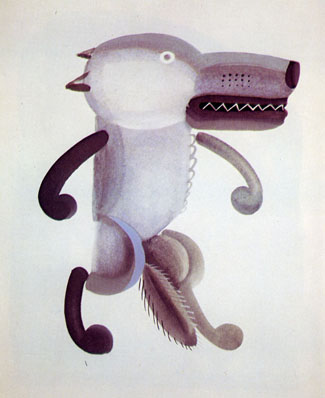
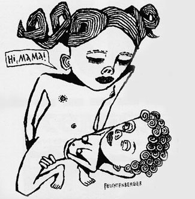
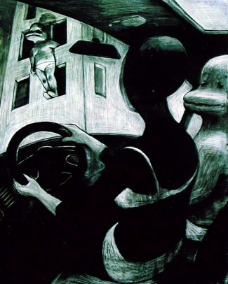

ЕЩЕ О ПОЛЬЗЕ ПЛАГИАТА
Сердце врага
Нам только кажется, что мы – это мы. Мы – компот из того, на что мы смотрим, и особенно того, на что мы смотрим с вытаращенными глазами.
Взять меня, который числится владельцем сокровища под названием «собственный стиль». Каждый раз, как мне попадается в руки какой-нибудь старый Крокодил, я заново убеждаюсь, что «мой стиль» суть беспорядочные попытки срастить гротеск советской карикатуры с топорностью советских же плакатов, плюс жизнерадостный формализм Токмакова, плюс некоторые благоприобретенные технологии.

Для иллюстрации, сколько-то лет назад я увидел в журнале КАК вот эту картинку...

– и неделю ходил пришибленный сознанием того, что никогда не нарисую ничего настолько крутого.
Не прошло и двух лет, как вот эта линогравюрообразие поперло у меня отовсюду – только потому, что я нашел удобный способ рисовать в фотошопе белым по черному (x под кнопкой на пере вакома, кому интересно). Что бы стоило мне еще тогда задуматься о том, как устроена эта картинка, срисовать ее и узнать о ней таким образом все, что мне было нужно? И вместо того, чтобы долгие месяцы молча ненавидеть автора (зависть – ужасное чувство), поступить как настоящий воин: съесть его сердце и получить его силу. Сэкономил бы кучу времени.
Вдохновение должно быть активным, а не пассивным процессом, только так им можно управлять. Полагаться на музу в нашем деле не принято. Отсутствие вдохновения за отмазку не катит.
У нас в британской школе, и вообще в современной системе зарубежного художественного образования многое (а то и все) держится именно на этом. Во главе угла стоит Скетчбук, но понимается он не как ямка, куда сваливаются разрозненные находки, как это у нас принято, а как рабочая тетрадь, куда срисовываются, выклеиваются и выписываются материалы, прямо и косвенно связанные с задачей. Сковородка, на которой сердце врага нужно разделывать и жарить (c трюфелями). Кроме прочего, это формальный документ, демонстрирующий развитие идеи и гарантия от плагиата. Первый год я к нему относился именно так – пока не увидел, какие результаты он приносит тем, кто относится к нему серьезно. Он заставляет расти и защищает от творческих застоев.
Как я, давно уже, говорил, если у вас есть «вы», некий внутренний стержень, копирование чужих работ никак не затронет и не сдвинет его, наоборот, плотно обложит его грунтом ходов и технологий – если же стержня нет, то технологии вполне его заменят. Это называется «профессионализм». Притом часто бывает, что этот самый стержень самозарождается в плотно спрессованном грунте (Знаете ли вы, что рог носорога состоит из сросшихся волос?). Я, впрочем, верю, что хоть в зачаточном состоянии, но эта штука есть у каждого. Для меня вот эта идея стержня полностью вытеснила бесполезную и вредную идею таланта. Талант не гарантирует успеха. Гарантируют умение работать, мотивация, растопыренные глаза.
Так вот, возвращаясь к «стилю». Тех, кто ждет, пока стиль сам собой выкристаллизуется из «внутреннего мира», ждет разочарование (о котором, впрочем, они могут годами не догадываться). Сами собой, как известно, только мухи родятся. Но в каждом внутреннем мире найдутся следы какого-нибудь Бердслея или чего-нибудь настолько же изъезженного, поэтому.
Чем больше времени вы проведете на illustrationmundo (или в подшивках «крокодила», каждому свое), тем выше шансы, что вам достанется что-то особенное. Притом, отметьте, нужно уметь брать у несимпатичных художников, искать ходы там, где не очень хочется, не брезговать лазать за трюфелями в грязь.
Выбрать стиль – невыполнимая задача. Это он, на самом деле, выбирает вас. Дайте ему больше пищи для размышлений.
Внутренний мир художника сам по себе никому не интересен. Интересно только то, что художник имеет сообщить о мире внешнем, преломив его внутри, своим собственным языком. Язык – вторичен.
Да, есть моменты чисто коммерческие. Да, некоторые языки в конкретный момент могут продаваться лучше других. Да, существует конъюнктура современной иллюстрации – но конъюнктура никогда не рифмовалась с творчеством.
Если вы думаете, что конъюнктура советского плаката хоть сколько-то скучнее конъюнктуры современного граффити, вы сильно заблуждаетесь. И то, и другое – не более чем конъюнктура, то есть – колея.
Да, некоторым арт-директорам часто удобнее работать с художниками предсказуемыми. А другим арт-директорам удобнее работать с художниками, которые владеют больше, чем одним инструментом и способны подстраиваться под задачу. Для меня три разных по языку картинки в портфолио означают, что автор «далеко пойдет». А попадет ли в колею – да какая разница? Надеюсь, нет.
